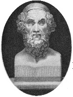

Homeros’un İlyada ve Odysseia’sında anlattığı hikâyeler Batı kültürüne öyle işlemiştir ki günümüzde bile onlarla karşılaşmamak imkânsızdır. Truva atından kikloplara, yani tek gözlü canavarlara, Akhilleus’un topuğundan sirenlerin şarkılarına, her iki epik eserin unsurları da yazılmalarından neredeyse üç bin yıl sonra edebiyatımızın ve gündelik dilimizin temel taşları olarak varlıklarını sürdürmektedir.

İlyada ile Odysseia, iki epik şiirdir. Bu uzun, Yunanca manzumeler, yazıya dökülmeden önce muhtemelen ezberden okunmuş veya şarkı gibi söylenmiş, nesilden nesle sözlü olarak aktarılmıştır. Bu süreçte Homeros’un tam olarak nasıl bir rol oynadığı gizemini korumakta, gerçekte yaşamış olup olmadığıyla ilgili tartışmalar hâlâ sürmektedir. Her halükârda, bilginler her iki eserin de MÖ VIII. yüzyıl civarında, bugün Türkiye’nin Ege Bölgesi’nde kalan fakat o zamanlar antik Yunan sınırları içerisinde bulunan İyonya’da ortaya çıktığına inanmaktadır.
İlyada, Akhalar (Yunanistan) ile Truvalılar arasında gerçekleşen Truva Savaşı’nda Akhiellus, Agamemnon ve diğer kahramanların başlarından geçenleri anlatır. Efsaneye göre savaş, Truva Prensi Paris’in, dünyanın en güzel kadını olan Spartalı Helen’i kaçırması ve onu eşi yapmak üzere Truva’ya götürmesiyle başlar. İlyada ise savaşın ilk dokuz yılından sonra başlar ve Akhalardan Akhiellus’un öfkesine odaklanarak, kahramanın gösterdiği ölümcül hatalarla kahramanlıkları bir arada ele alır. Yol boyunca Homeros, şiiri haklı olarak ünlü kılan “gül parmaklı şafak,” “şarap karası deniz” gibi çağrışımlara dayalı tasvirleri de anlatımına dahil eder.
İlyada’nın devamı olan Odysseia, Yunanlı kahraman Odysseus’un evine dönüp eşi Penelope’ye kavuşmak için denize açıldığında atlattığı badireleri anlatır. Odysseus’un yolculuğu on sene sürer. Çünkü Poseidon’u öfkelendirmiştir ve deniz tanrısı bu yolculuğu aksatmak için elinden gelen her şeyi yapar. Zekâsının ve Tanrıça Athena’nın yardımıyla Odysseus en sonunda İthaka’ya dönmeyi başarır ve kendisine sadık kalan eşine evlilik teklifleriyle yanaşan talipleri dağıtır.
İlyada ile Odysseia’nın, yazarlarına dair ayrıntılar bilinmemekle birlikte, antik Yunan’da gündelik hayat üzerinde inanılmaz kültürel ve işlevsel etkileri oldu. O zamanlarda epik şiirleri baştan sona ezberlemek yaygındı. Yunanistan’ın altın çağı MÖ 100’lerde son bulmuşsa da, Homeros’un eserleri kalıcı oldu ve Virgil’in Aeneid’i gibi antik Roma epiklerine de ilham verdi.
EK BİLGİLER:
1. Uzun yıllar Truva Savaşı’nın sadece bir efsane olduğuna inanılmasına rağmen, 1800’lerin sonlarında Türkiye’de yapılan arkeolojik kazılar, savaşın tarihi temelleri olabileceğini ortaya koydu.
2. Truvalı Helen’i “binlerce gemiyi yola çıkaran yüz” olarak betimleyen ünlü ifade İlyada’da değil, Christopher Marlowe’un ünlü oyunu Dr. Faustus’ta (1604) geçmektedir.